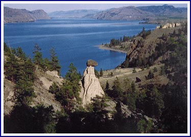

{kind=link}
Things To Do
Explore the Kamloops Area While Staying at Kamloops Lake Lakeside Country Inn
- Discover Kamloops Lake which is a mile wide and 18 miles long. There are many beautiful sand bars for sunning, swimming and exploring.
- Fish for trout - Kamloops, Rainbow, Dolly Varden, Kokanee.
- Explore the shoreline and discover interesting driftwood, coloured rock formations, abandoned mine workings, hobo shacks, and keekwillie holes. From the lake, view the balancing rock as well as the stone masonry railway bridges (circa 1900) and seven railway tunnels. You might even spot some California Bighorn sheep roaming the northern hillsides. Spend the day on the lake and have a picnic lunch on a secluded sandy beach.
- Walk along the lakeshore and collect driftwood and coloured rocks. You can find agates, apple-green common opal and various shades of jasper pebbles on the shore, carried down off Savona Mountain by Durand Creek.
- Hunt for fossils just 15 minutes west of Savona at the McAbee Fossil Beds. The McAbee Fossil Beds date back over 50 million years and consist of ancient lake sediment. Over 50 plant varieties have been founds, as well as countless insect species, Mooneye fish, cones and even feathers. The digging season runs from May to October. More information is available on their web site.
- Bike down the street on our classic cruisers to the Savona Lakeshore Park.
- Hike in the hills to the south for a great view of Savona and study our semi-arid vegetation. Cactus bloom in colours from white to yellow and light apricot. When the sage is in bloom, its scent fills the air.

- Hike to the Savona Balancing Rock, a ten minute drive from Kamloops Lake
Lakeside Country Inn. The Balancing Rock, weighing many tons, stands as a sentinel by the lake, balanced on a clay hoodoo base. Be sure to take your camera.
- Pack a picnic lunch and go exploring! We're happy to lend you a great guidebook that will make sure you don't miss any interesting stops.
- Discover one of the least commercialized of British Columbia's many beauty spots, the Deadman Valley. You will drive through a lush green valley of alfalfa, and see hoodoos, caves, volcanic lava cliffs, giant sand castles, and rock bluffs. Travel past a chain of seven lakes to see the spectacular Deadman Falls which fall into a narrow canyon 280 feet deep. The Deadman Valley is a fascinating study of contrasts.
- Experience the history of Gold Country and visit Historic Hat Creek Ranch, only half an hour away. Hat Creek House was established in 1861 and is the last remaining roadhouse of its type. Tour the rooms, visit the Blacksmith Shop and make a square-headed nail, or take a wagon ride down the original Wagon Road.
- Visit the Secwepemc Museum and Native Heritage Park in Kamloops. Learn about the rich cultural history of the Shuswap Nation. Visit the displays on hunting, fishing and cooking as well as the replica of a traditional winter village, complete with pit houses.
For Reservations or Information E-mail us at info@kamloops-accommodations.com
Or call us Toll Free at 1-800-909-7434 or 250-373-2528